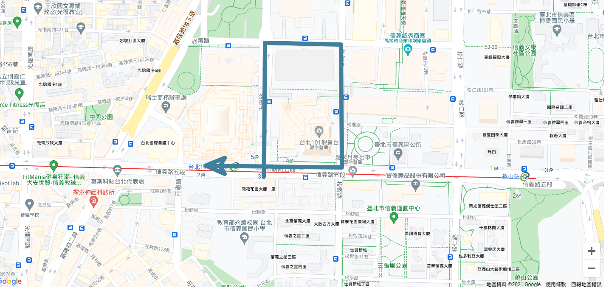

Angular 如何整合 Google Maps 設定篇
Angular 如何整合 Google Maps 設定篇
上一篇提到，我認為與angular整合最好的套件是angular官方推出的 Angular Google Maps component，因此本篇將以此套件作為整合示範
開始前的準備
在開始之前，必須要準備 google maps api key ，這個是必須不可或缺的，因為使用google map api 的服務不是免費服務，是以使用次數來計價，這個也是google maps 營利的方式之一。
安裝 Angular Google Maps component
npm install @angular/google-maps在 app.module.ts引入 google maps module
import { NgModule } from '@angular/core';
import { GoogleMapsModule } from '@angular/google-maps';
import { BrowserModule } from '@angular/platform-browser';
import { AppComponent } from './app.component';
@NgModule({
declarations: [
AppComponent
],
imports: [
BrowserModule,
// 引入 google maps module
GoogleMapsModule
],
providers: [],
bootstrap: [AppComponent]
})
export class AppModule { }在index.html加入金鑰
<!doctype html>
<html lang="en">
<head>
<meta charset="utf-8">
<title>HelloAngular</title>
<base href="/">
<!-- 加入api 金鑰 -->
<script src="https://maps.googleapis.com/maps/api/js?key=你的金鑰"></script>
<meta name="viewport" content="width=device-width, initial-scale=1">
<link rel="icon" type="image/x-icon" href="favicon.ico">
</head>
<body>
<app-root></app-root>
</body>
</html>在app.component.html 加入google maps
<google-map
height="75%"
width="75%"
[zoom]="zoom"
[center]="center"
[options]="options"
>
<map-polyline [options]="polyOptions" [path]="polyPath"></map-polyline>
</google-map>要注意的是，一定要給google maps的父元素空間，google maps才會顯示
因此在app.component.scss加入一些設定
:host{
display: block;
width: 100vw;
height: 100vh;
}最後在 app.component.ts加入設定的參數
import { Component } from '@angular/core';
@Component({
selector: 'app-root',
templateUrl: './app.component.html',
styleUrls: ['./app.component.scss'],
})
export class AppComponent {
polyPath: google.maps.LatLngLiteral[] = [
{ lat: 25.03280092118552, lng: 121.56348748779168 },
{ lat: 25.03587797931996, lng: 121.56351157458673 },
{ lat: 25.03583432131525, lng: 121.56543846794476 },
{ lat: 25.033019138809674, lng: 121.56546250540032 },
{ lat: 25.033062791203154, lng: 121.56201826717597 },
];
center: google.maps.LatLngLiteral = {
lat: 25.0336962,
lng: 121.5643673,
};
polyOptions: google.maps.PolylineOptions = {
strokeColor: '#40809d',
strokeOpacity: 1,
strokeWeight: 10,
icons: [
{
icon: {
path: google.maps.SymbolPath.FORWARD_CLOSED_ARROW,
},
offset: '100%',
},
],
};
//
zoom = 17;
options: google.maps.MapOptions = {
disableDefaultUI: true,
backgroundColor: '#126df5',
clickableIcons: false,
disableDoubleClickZoom: true,
draggable: true,
zoomControl: true,
};
}就可以做出這種把台北101圍起來的效果

如何管理環境
為何需要管理環境
由於google maps api是收費的服務，以使用的次數收費。談到錢的問題，就很敏感，誰用的就要誰付費。而一般系統都會區分為生產環境和測試環境。生產環境提供給使用者使用，所產生的營運費用可能算在合約裡面也可能算在維運的廢運；而測試環境提供給開發者使用，開發者所產生的費用會由部門經費支付。
因此生產環境和測試會各自有一把金鑰，各自管理、各自使用、各自付費。
官方提供的方法
在上一篇套件選擇的文章中提到，這一套的缺點是管理環境有點麻煩，以下是官方文件所提供的方法
// google-maps-demo.module.ts
import { NgModule } from '@angular/core';
import { GoogleMapsModule } from '@angular/google-maps';
import { CommonModule } from '@angular/common';
import { HttpClientModule, HttpClientJsonpModule } from '@angular/common/http';
import { GoogleMapsDemoComponent } from './google-maps-demo.component';
@NgModule({
declarations: [
GoogleMapsDemoComponent,
],
imports: [
CommonModule,
GoogleMapsModule,
HttpClientModule,
HttpClientJsonpModule,
],
exports: [
GoogleMapsDemoComponent,
],
})
export class GoogleMapsDemoModule {}
// google-maps-demo.component.ts
import { Component } from '@angular/core';
import { HttpClient } from '@angular/common/http';
import { Observable, of } from 'rxjs';
import { catchError, map } from 'rxjs/operators';
@Component({
selector: 'google-maps-demo',
templateUrl: './google-maps-demo.component.html',
})
export class GoogleMapsDemoComponent {
apiLoaded: Observable<boolean>;
constructor(httpClient: HttpClient) {
this.apiLoaded = httpClient.jsonp('https://maps.googleapis.com/maps/api/js?key=YOUR_KEY_HERE', 'callback')
.pipe(
map(() => true),
catchError(() => of(false)),
);
}
}在這邊我覺得最麻煩的地方是，如果要管理不同的api key，必須在每個元件啟動的時候個別載入一次，而不是有一個全域統一載入的地方。
這樣的作法會造成另外一個問題，假設同一個頁面要同時顯示多個以上的地圖元件，一樣的api key就會被重複載入多次，反而會讓api 返回錯誤，說同樣的api key請求授權太多次。
我的解法
修改main.ts
import { enableProdMode } from '@angular/core';
import { platformBrowserDynamic } from '@angular/platform-browser-dynamic';
import { AppModule } from './app/app.module';
import { environment } from './environments/environment';
// 新增這個
addGoogleMapApiKeyByEnvironment();
if (environment.production) {
enableProdMode();
}
platformBrowserDynamic()
.bootstrapModule(AppModule)
.catch((err) => console.error(err));
// 新增這個
function addGoogleMapApiKeyByEnvironment() {
const head = document.getElementsByTagName('head')[0];
const mapApiKey = environment.mapKey;
const script = document.createElement('script');
script.type = 'text/javascript';
script.src = `https://maps.googleapis.com/maps/api/js?key=${mapApiKey}`;
head.appendChild(script);
}main.ts 是angular啟動之前所執行的檔案，也就是說，我的作法是，在angular啟動之前，就先依照環境的不同，讀取不同的金鑰，然後直接寫入 index.html 當中，就和一開始直接在index.html直接寫死金鑰有同樣的效果，只不過多了一個環境變數作為判斷。
如此一來，就能保證金鑰只被載入一次，不會有上述重複載入的問題，更有環境判斷的效果了